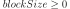
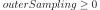

ExpectationSimulationResult¶
- class ExpectationSimulationResult(*args)¶
Expectation simulation result.
Gathers the results of a
ExpectationSimulationAlgorithmalgorithm.See also
Methods
Accessor to the block size.
Accessor to the object's name.
Accessor to the expectation distribution.
Accessor to the expectation distribution.
Accessor to the expectation estimate.
getId()Accessor to the object's id.
getName()Accessor to the object's name.
Accessor to the outer sampling.
Accessor to the random variable.
Accessor to the object's shadowed id.
Accessor to the expectation distribution.
Accessor to the variance estimate.
Accessor to the object's visibility state.
hasName()Test if the object is named.
Test if the object has a distinguishable name.
setBlockSize(blockSize)Accessor to the block size.
setExpectationEstimate(expectationEstimate)Accessor to the expectation estimate.
setName(name)Accessor to the object's name.
setOuterSampling(outerSampling)Accessor to the outer sampling.
setRandomVector(randomVector)Accessor to the random variable.
setShadowedId(id)Accessor to the object's shadowed id.
setVarianceEstimate(varianceEstimate)Accessor to the variance estimate.
setVisibility(visible)Accessor to the object's visibility state.
- __init__(*args)¶
- getBlockSize()¶
Accessor to the block size.
- Returns
- blockSizeint
Number of terms in the probability simulation estimator grouped together.
- getClassName()¶
Accessor to the object’s name.
- Returns
- class_namestr
The object class name (object.__class__.__name__).
- getCoefficientOfVariation()¶
Accessor to the expectation distribution.
- Returns
- coefficientOfVariation
Point Coefficient of variation.
- coefficientOfVariation
- getExpectationDistribution()¶
Accessor to the expectation distribution.
- Returns
- expectationEstimate
Distribution Distribution of the expectation.
- expectationEstimate
- getExpectationEstimate()¶
Accessor to the expectation estimate.
- Returns
- expectationEstimate
Point Estimate of the expectation.
- expectationEstimate
- getId()¶
Accessor to the object’s id.
- Returns
- idint
Internal unique identifier.
- getName()¶
Accessor to the object’s name.
- Returns
- namestr
The name of the object.
- getOuterSampling()¶
Accessor to the outer sampling.
- Returns
- outerSamplingint
Number of groups of terms in the probability simulation estimator.
- getRandomVector()¶
Accessor to the random variable.
- Returns
- event
RandomVector Random variable we want to study.
- event
- getShadowedId()¶
Accessor to the object’s shadowed id.
- Returns
- idint
Internal unique identifier.
- getStandardDeviation()¶
Accessor to the expectation distribution.
- Returns
- standardDeviation
Point Standard deviation.
- standardDeviation
- getVarianceEstimate()¶
Accessor to the variance estimate.
- Returns
- expectationEstimate
Point Estimate of the variance.
- expectationEstimate
- getVisibility()¶
Accessor to the object’s visibility state.
- Returns
- visiblebool
Visibility flag.
- hasName()¶
Test if the object is named.
- Returns
- hasNamebool
True if the name is not empty.
- hasVisibleName()¶
Test if the object has a distinguishable name.
- Returns
- hasVisibleNamebool
True if the name is not empty and not the default one.
- setBlockSize(blockSize)¶
Accessor to the block size.
- Parameters
- blockSizeint, 
Number of terms in the probability simulation estimator grouped together.
- setExpectationEstimate(expectationEstimate)¶
Accessor to the expectation estimate.
- Parameters
- expectationEstimate
Point Estimate of the expectation.
- expectationEstimate
- setName(name)¶
Accessor to the object’s name.
- Parameters
- namestr
The name of the object.
- setOuterSampling(outerSampling)¶
Accessor to the outer sampling.
- Parameters
- outerSamplingint, 
Number of groups of terms in the probability simulation estimator.
- setRandomVector(randomVector)¶
Accessor to the random variable.
- Parameters
- event
RandomVector Random variable we want to study.
- event
- setShadowedId(id)¶
Accessor to the object’s shadowed id.
- Parameters
- idint
Internal unique identifier.
- setVarianceEstimate(varianceEstimate)¶
Accessor to the variance estimate.
- Parameters
- expectationEstimate
Point Estimate of the variance.
- expectationEstimate
- setVisibility(visible)¶
Accessor to the object’s visibility state.
- Parameters
- visiblebool
Visibility flag.